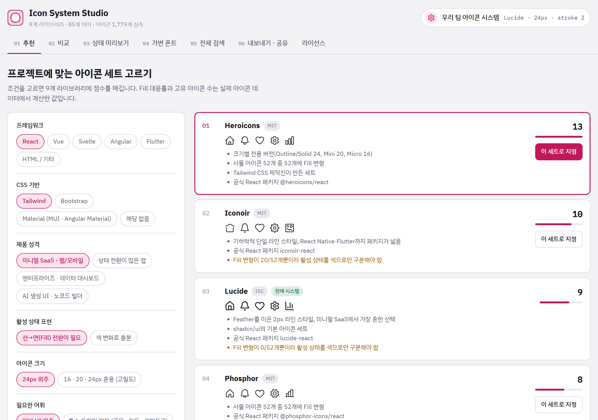
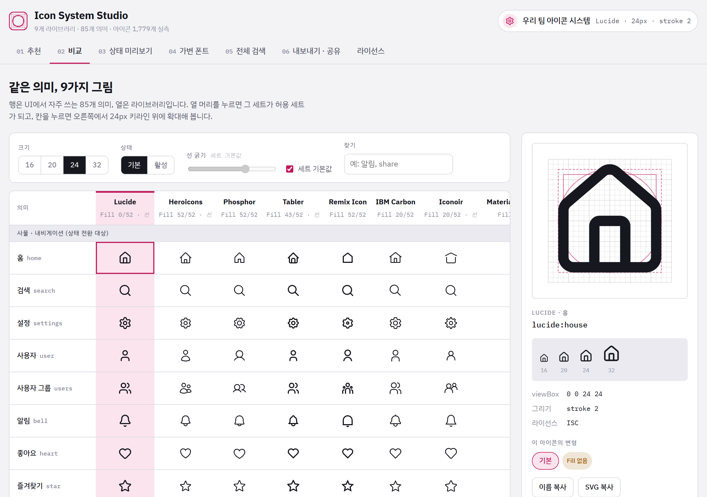
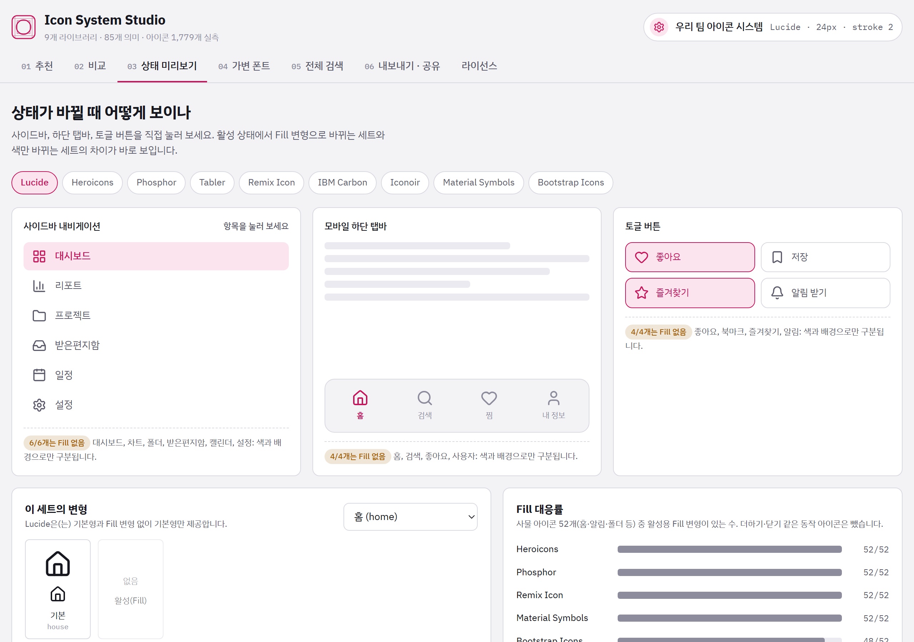
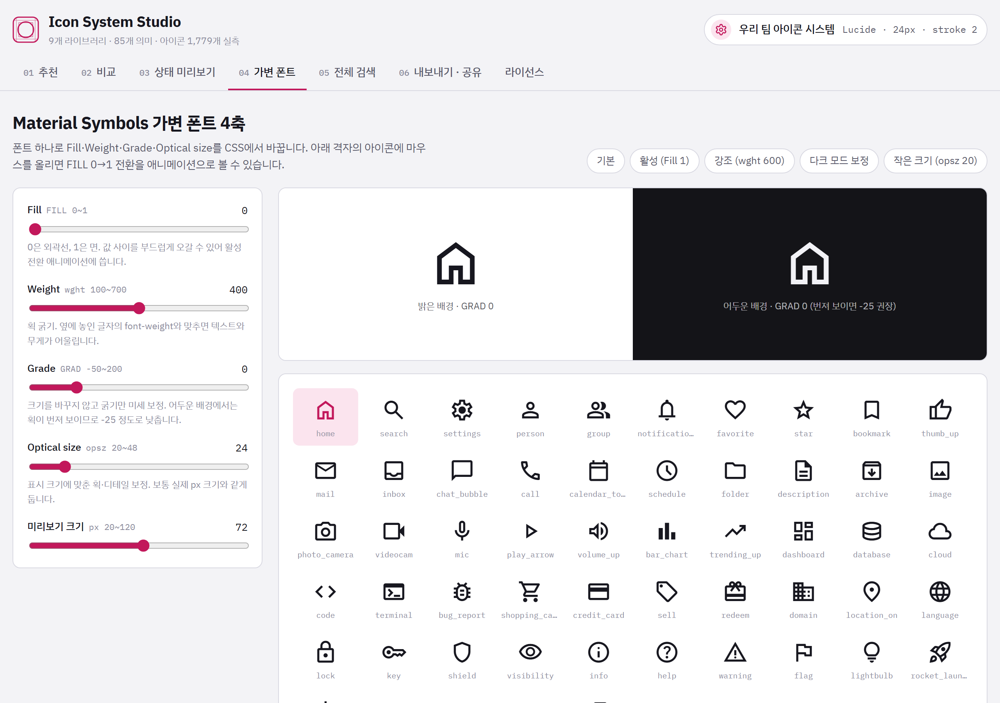
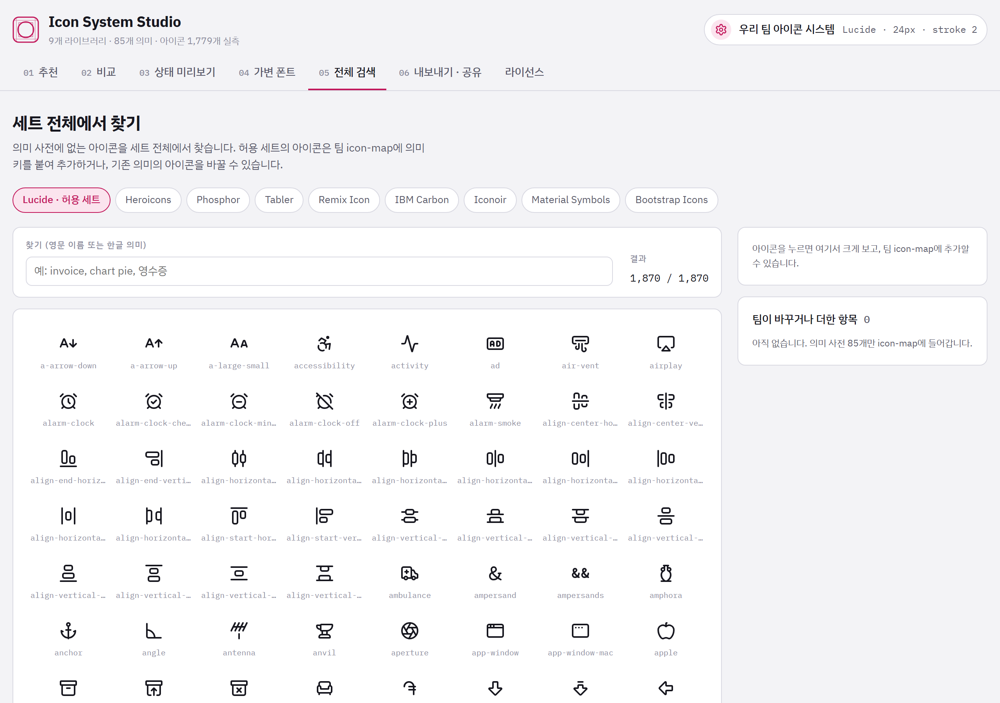
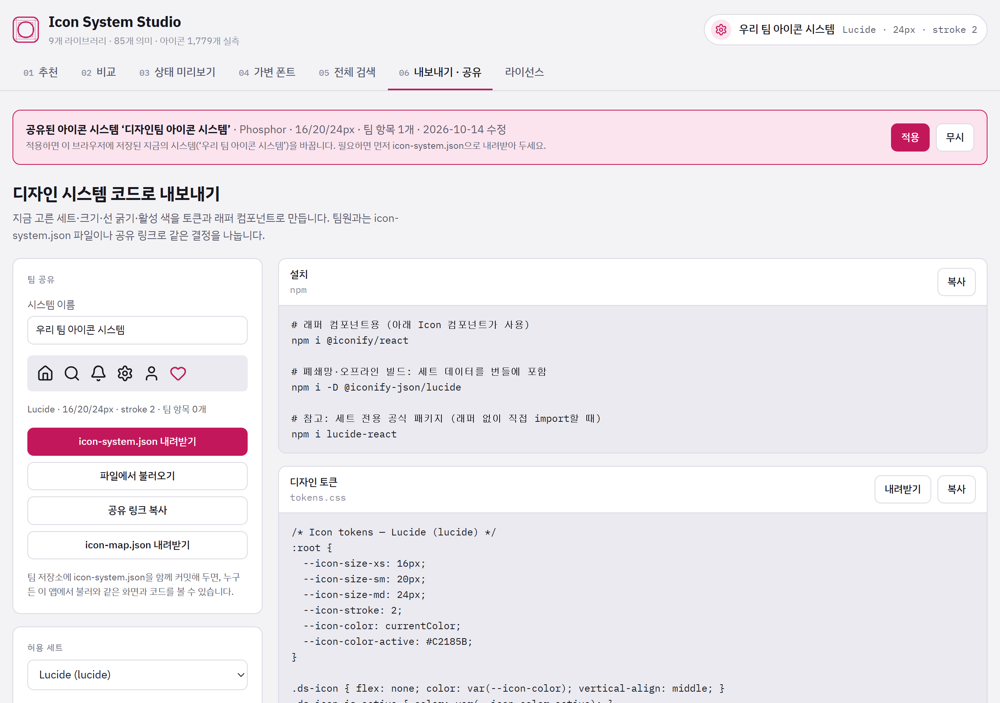

설치나 로그인 없이 브라우저(크롬·엣지·사파리)에서 바로 열려요. 휴대폰에서도 볼 수 있어요.
버전 0.12026년 10월
이런 도구예요
아이콘 라이브러리는 종류가 많고 생김새가 조금씩 달라요. 한 화면에 여러 세트가 섞이면 선 굵기와 모양이 어긋나 보이죠. Icon System Studio는 무료 아이콘 세트 9개를 나란히 비교해서 우리 팀이 쓸 세트를 하나 정하고, 그 결정을 개발자가 바로 쓸 수 있는 코드로 바꿔 줘요.
고르기
세트 정하기
프로젝트 조건에 맞는 세트를 추천받고, 같은 아이콘을 9개 세트로 나란히 비교해요.
맞추기
규칙 정하기
아이콘 크기, 선 굵기, 선택됐을 때의 모양과 색을 팀 규칙으로 정해요.
나누기
팀과 공유하기
링크나 파일로 팀원과 나누고, 개발자에게 넘길 코드를 바로 복사해요.
시작하기
표지의 주소를 브라우저 주소창에 넣으면 바로 열려요.
고른 설정은 지금 쓰는 브라우저에 자동으로 저장돼요. 다음에 열어도 그대로 있어요.
다른 컴퓨터로 옮기거나 팀원에게 보낼 때는 공유 링크를 써요 (9쪽).
화면 구성

123
1현재 시스템: 지금 정한 세트 이름, 크기, 선 굵기가 보여요. 누르면 내보내기 · 공유 화면으로 가요.
2탭: 01부터 06까지 차례대로 진행하면 돼요. 맨 끝 ‘라이선스’에는 아이콘 저작권 정보가 있어요.
3작업 화면: 고른 탭의 내용이 여기에 나와요.
이 순서로 하면 돼요
처음이라면 아래 다섯 단계만 따라 하세요. 단계마다 자세한 설명은 다음 쪽부터 있어요.
1
추천받기01 추천 · 4쪽
우리 프로젝트 조건을 고르고, 1순위로 나온 세트를 지정해요.
2
눈으로 비교하기02 비교 · 5쪽
같은 아이콘이 세트마다 어떻게 다른지 확인하고, 크기와 선 굵기를 맞춰 봐요.
3
선택 상태 확인하기03 상태 미리보기 · 6쪽
메뉴나 버튼을 눌렀을 때 아이콘이 어떻게 바뀌는지 직접 눌러 봐요.
4
필요한 아이콘 더 찾기05 전체 검색 · 8쪽
기본 목록에 없는 아이콘이 있으면 찾아서 팀 목록에 추가해요.
5
팀과 나누기06 내보내기 · 공유 · 9쪽
팀원에게는 공유 링크를, 개발자에게는 코드를 넘겨요.
참고‘04 가변 폰트’ 탭은 구글의 Material Symbols를 쓸 때만 보면 돼요 (7쪽).
01
추천
언제 쓰나요?어떤 아이콘 세트를 쓸지 아직 정하지 못했을 때
123
1왼쪽에서 우리 프로젝트에 맞는 조건을 하나씩 눌러요. 프레임워크, CSS, 제품 성격, 선택 상태 표현, 아이콘 크기, 필요한 어휘, 라이선스 순서예요. 잘 모르는 항목은 그대로 두어도 돼요.
2오른쪽에 점수가 높은 세트부터 나와요. 회색 줄은 이 세트를 추천하는 이유, 주황색 줄은 주의할 점이에요.
3마음에 드는 세트의 이 세트로 지정을 누르면 우리 팀의 허용 세트가 돼요. 오른쪽 위 ‘현재 시스템’에 이름이 바뀌어 보여요.
팁화면을 아래로 내리면 ‘라이브러리 사양’ 표가 있어요. 세트별 아이콘 수, 스타일, 라이선스를 한눈에 비교할 수 있어요.
02
비교
언제 쓰나요?세트마다 아이콘 모양이 어떻게 다른지 직접 보고 싶을 때

12345
1위쪽에서 크기(16~32px), 상태(기본·활성), 선 굵기를 바꿔 봐요. ‘활성’을 누르면 선택됐을 때 쓰는 채워진 모양이 보여요.
2세트 이름(열 머리)을 누르면 그 세트가 허용 세트가 돼요. 분홍색 열이 지금 고른 세트예요.
3아이콘 칸을 하나 누르면
4오른쪽에 크게 확대돼요. 분홍 선은 아이콘 크기를 맞추는 기준 격자(키라인)예요. 그 아래에서 실제 크기 16·20·24·32px로도 확인할 수 있어요.
5이름 복사SVG 복사로 아이콘을 디자인 툴이나 코드에 바로 붙여 넣을 수 있어요.
팁칸 오른쪽 위에 주황색 작은 동그라미가 있으면 그 세트에는 채워진 모양이 없다는 뜻이에요. 찾기 칸에는 ‘알림’처럼 한글로 써도 돼요.
03
상태 미리보기
언제 쓰나요?메뉴나 버튼을 눌렀을 때 아이콘이 어떻게 바뀌는지 확인할 때

1234
1위에서 세트를 고르면 아래 미리보기가 바로 바뀌어요. 여기서 고른 세트도 허용 세트가 돼요.
2사이드바 메뉴, 모바일 탭바, 토글 버튼을 직접 눌러 보세요. 선택된 항목은 분홍색이 되고, 세트에 따라 아이콘이 채워진 모양으로 바뀌어요.
3‘Fill 없음’ 표시는 그 세트에 채워진 모양이 없어서 색으로만 구분된다는 뜻이에요.
4Fill 대응률: 세트마다 채워진 모양을 얼마나 갖췄는지 막대로 비교해요. 막대가 길수록 선택 상태를 표현하기 쉬워요.
팁Lucide처럼 Fill 대응률이 0인 세트도 쓸 수 있어요. 대신 선택된 메뉴는 색과 배경으로 분명하게 구분해 주세요.
04
가변 폰트
필요할 때만
언제 쓰나요?구글의 Material Symbols 아이콘을 쓰거나 검토할 때

123
1슬라이더 네 개로 채움(Fill), 굵기(Weight), 미세 굵기(Grade), 크기 보정(Optical size)을 바꿔요. 위쪽 큰 미리보기에서 밝은 배경과 어두운 배경을 함께 볼 수 있어요.
2‘기본’, ‘활성’, ‘강조’, ‘다크 모드 보정’ 같은 버튼을 누르면 자주 쓰는 값이 한 번에 들어가요.
3아래 아이콘에 마우스를 올리면 빈 모양이 채운 모양으로 부드럽게 바뀌어요. 누르면 큰 미리보기에 나와요.
팁맨 아래 CSS 코드를 복사해서 개발자에게 주면 화면에서 본 모양이 그대로 나와요. 어두운 배경에서는 Grade를 −25 정도로 낮추면 아이콘이 번져 보이지 않아요.
05
전체 검색
언제 쓰나요?기본 목록(85개)에 없는 아이콘이 필요할 때

1234
1찾을 세트를 골라요. ‘허용 세트’라고 쓰인 것이 지금 우리 팀 세트예요. 세트를 처음 고를 때는 아이콘을 내려받느라 몇 초 걸려요.
2영어 이름(예: receipt, chart pie)이나 한글(예: 알림)로 찾아요.
3원하는 아이콘을 누르면
4오른쪽에서 크게 보여요. 의미 키(예: invoice)와 한글 이름(예: 청구서)을 적고 추가를 누르면 팀 아이콘 목록에 들어가요. 그 아래 ‘팀이 바꾸거나 더한 항목’에서 확인하고 뺄 수도 있어요.
팁이미 있는 의미 키(예: settings)를 그대로 쓰면, 그 아이콘이 새로 고른 아이콘으로 바뀌어요.
허용 세트가 아닌 다른 세트의 아이콘은 섞이지 않도록 추가할 수 없어요. 비교용으로만 볼 수 있어요.
06
내보내기 · 공유
언제 쓰나요?정한 내용을 팀원과 나누거나 개발자에게 넘길 때

12345
1공유 링크로 들어오면 맨 위에 안내가 떠요. 적용을 누르면 받은 설정으로 바뀌고, 무시를 누르면 지금 설정을 그대로 둬요.
2icon-system.json 내려받기: 우리 팀 결정이 담긴 파일을 저장해요.
3파일에서 불러오기: 받은 파일을 열어 같은 설정을 불러와요.
4공유 링크 복사: 링크 하나로 보내요. 메신저나 메일에 붙여 넣으면 돼요.
5오른쪽 코드 상자는 개발자에게 넘길 코드예요. 복사나 내려받기로 전달하세요.
팀과 나누는 두 가지 방법
방법
이럴 때 좋아요
받는 사람은
공유 링크
빠르게 보여 주거나 의견을 물을 때
링크를 열고 적용
icon-system.json 파일
팀의 공식 기준으로 오래 보관할 때 (공유 폴더나 저장소에 보관)
파일에서 불러오기로 열기
팁왼쪽 아래에서 허용 세트, 프레임워크, 크기 단계, 활성 색도 바꿀 수 있어요. 바꾸면 오른쪽 코드가 바로 따라 바뀌어요.
자주 묻는 질문
어제 정한 설정이 사라졌어요.
설정은 그때 쓴 브라우저에만 저장돼요. 다른 브라우저, 다른 컴퓨터, 시크릿 창에서는 보이지 않아요. 중요한 결정은 icon-system.json으로 내려받아 두세요.
다른 컴퓨터에서도 같은 설정을 쓰고 싶어요.
06 탭에서 공유 링크 복사를 누르고, 다른 컴퓨터에서 그 링크를 연 뒤 적용을 누르세요.
04 가변 폰트 탭에 아이콘 대신 영어 글자(home 등)가 보여요.
회사 네트워크가 구글 폰트를 막고 있을 수 있어요. 다른 탭은 정상으로 쓸 수 있어요. 집이나 다른 네트워크에서 확인해 보세요.
전체 검색에서 추가 버튼이 안 보여요.
허용 세트가 아닌 세트를 보고 있어서 그래요. 위에서 ‘허용 세트’ 표시가 있는 세트를 고르세요.
사이트가 열리지 않아요.
인터넷 연결을 확인하세요. 회사망에서는 github.io 주소가 막혀 있을 수 있으니 전산팀에 문의하세요. 인터넷 익스플로러는 지원하지 않아요.
여기 있는 아이콘을 회사 제품에 써도 되나요?
9개 세트 모두 상업적으로 쓸 수 있어요. 제품에 넣을 때는 ‘라이선스’ 탭의 고지문을 제품의 오픈소스 고지 화면에 함께 넣어 주세요.
주의공유 링크와 icon-system.json에는 팀의 아이콘 설정만 들어 있어요. 개인 정보는 들어가지 않지만, 링크를 받은 사람은 누구나 같은 설정을 볼 수 있어요.
용어 풀이
허용 세트
우리 팀이 쓰기로 정한 아이콘 세트 하나예요. 화면에 여러 세트가 섞이지 않게 해 줘요.
활성 상태 · Fill
메뉴나 버튼이 선택됐을 때의 모양이에요. 보통 속이 채워진(Fill) 아이콘을 써요.
선 굵기 (stroke)
선으로 그린 아이콘의 선 두께예요. Lucide, Heroicons, Tabler, Iconoir만 조절돼요.
키라인
아이콘 크기와 여백을 맞추는 기준 격자예요. 비교 탭의 확대 화면에 분홍 선으로 보여요.
의미 키
아이콘을 부르는 영어 이름표예요. 예: home, settings, invoice
icon-map
의미 키와 실제 아이콘을 짝지은 목록이에요. 개발자는 이 목록으로 아이콘을 불러요.
icon-system.json
우리 팀의 결정(세트, 크기, 선 굵기, 색, 추가한 아이콘)을 담은 파일이에요.
디자인 토큰
크기나 색 같은 값에 붙인 이름이에요. 예: --icon-size-md: 24px
9개 아이콘 세트
Lucide · Heroicons · Phosphor · Tabler · Remix Icon · IBM Carbon · Iconoir · Material Symbols · Bootstrap Icons. 모두 무료로 쓸 수 있는 오픈소스 세트이고, 저작권자와 라이선스는 앱의 ‘라이선스’ 탭에 정리돼 있어요.